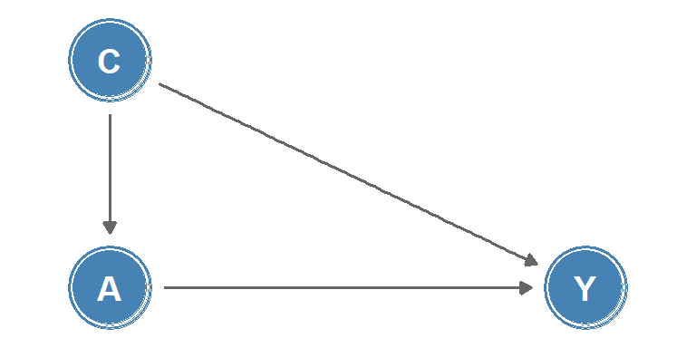
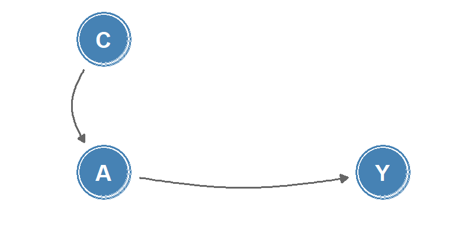

![]()

This is part seven of a series on statistical methods for analysing time-to-event, or “survival” data.
In this post I’ll introduce the concept of causal inference from observational data and provide an outline of three common methods to compute the average causal effect.
Assessing causal effects
In trial settings, well-designed randomised experiments, where the treated and untreated are theoretically exchangeable (or exogenous), provide a rigorous way to assess causal effects within a specific population. Under these ideal conditions, any observed association between the treatment and the outcome can be more confidently interpreted as causation, due to the minimisation of confounding and selection bias. However, even randomised trials have limitations, with potential issues including external validity or the Hawthorne effect - where participants modify their behaviour in response to being observed.
In contrast, observational data typically present more challenges in establishing causality due to the potential for unmeasured confounding and selection bias. If an explicit causal question is defined (e.g. the effect of a well-specified hypothetical intervention), and certain stringent conditions fulfilled (such as no unmeasured confounding, positivity, and consistency) it becomes possible to make causal inferences from observational data. This approach, referred to as the potential outcome framework, requires careful consideration of the study design, choice of appropriate statistical methods, and transparent reporting of assumptions, with any causal claims depending on the plausibility of these assumptions.
Causal diagrams and local independence
Causal diagrams are a graphical tool used to visualise causal relationships. One class of causal diagrams are causal directed acyclic graphs (causal DAGs). In these graphs, nodes represent measurements or interventions at discrete times, and edges between nodes indicate causal effects, an example is shown in Figure 1. The lack of an edge between nodes can be interpreted as the absence of a direct effect.
Whilst causal DAGs are useful to describe relationships between discrete-time processes, they are poorly suited to describing causality in continuous-time, as changes in quantities or the occurrence of events are not represented. Instead, for continuous-time processes, the concept of local independence may be applied to consider how well a future value of an intensity process (such as a transition intensity in a multi-state model) is predicted by the past. Local independence can be viewed as immediate causation, and can be represented in a type of causal diagram known as a local independence graph. In these graphs, nodes represent stochastic processes and edges between nodes represent immediate causal influence, example shown in Figure 2.

Causal inference from observational data
To make causal inference from observational data we rely on being able to analyse the data as if treatment had been randomly assigned, conditional on a set of measured covariates \(Z\). This is termed a conditionally randomised experiment.
Let \(Y = (0:\) doesn’t experience outcome, \(1:\) experiences outcome\()\) be a random variable for an observed outcome, and \(A = (0:\) untreated, \(1:\) treated\()\) be a random variable for an observed treatment, then:
\[ \Pr(Y = 1 \mid A = 1) \]
is the probability of experiencing the outcome given treatment. Define the potential outcome under treatment \(a\) as \(Y^a\), then the potential outcome under the observed treatment is: \(Y^A = Y\).
Identifiability conditions
Three identifiability conditions are required for an observational study to be treated as a conditionally randomised experiment:
Consistency: the values of treatment under comparison correspond to well-defined interventions that, in turn, correspond to the versions of treatment in the data, i.e. \(Y^a = Y\) for individuals with \(A = a\).
Exchangeability: the conditional probability of receiving every value of treatment depends only on measured covariates \(Z\). This is alternatively phrased as: conditional on a set of measured covariates \(Z\), the untreated group, had they been treated, would experience the same average outcome as the treated group, i.e.
\[ \Pr(Y^a = 1 \mid A = 1, Z = z) = \Pr(Y^a = 1 \mid A = 0, Z = z) \]
or equivalently, \(Y^a \mathrel{\perp\!\!\!\!\perp} A \mid Z = z\), the counterfactual outcome and the observed treatment are independent within the covariate levels \(Z = z\). Here, \(\mathrel{\perp\!\!\!\!\perp}\) is the notation for independence.
Positivity: the probability of receiving every value of treatment \(a\) conditional on \(Z = z\) is positive, i.e.
\[ \Pr(A = a \mid Z = z) > 0 \quad\text{for all } z \text{ where } \Pr(Z = z) \neq 0 \]
Among these conditions, consistency and positivity are usually straightforward to check in observational studies whilst exchangeability relies on the assumption that all predictors of an outcome have been measured. It is usually impossible to guarantee exchangeability, but understanding the potential for biases such as confounding and collider bias (defined below) can inform which covariates to include such that the assumption will be approximately true.
If the three identifiability conditions are fulfilled, a (hypothetical) randomised experiment, known as a target trial, may be emulated using causal inference from observational data, with the average causal effect quantified as \(E(Y^{a = 1}) - E(Y^{a = 0})\).
Methods to compute the average causal effect
Three commonly-used methods to compute the average causal effect are inverse probability weighting, matching, and standardisation.
Inverse probability weighting
The concept of inverse probability weighting is to assign weights to each individual in the cohort based on the inverse of the probability of receiving the observed treatment level, conditional on their covariates, \(Z\). For example, a treated individual, \(A = 1\), with a set of covariates \(Z = z\) would be assigned a weight of \(1/\Pr(A = 1 \mid Z = z)\).
Conversely, an untreated individual, \(A = 0\), with covariates \(Z = z'\) would be assigned a weight of \(1/\Pr(A = 0 \mid Z = z')\). These weights are used to adjust for potential baseline confounders when estimating the causal effect of treatment, allowing the creation of a pseudo-population where treatment assignment is independent of the observed covariates.
Matching
Matching involves constructing a subset of the population in which the distribution of covariates, \(Z\), is the same for the treated and untreated groups. This is typically achieved by pairing each treated individual with an untreated individual with the same or similar covariate values. The causal effect can be estimated as the average difference in outcomes among the matched pairs.
Standardization
Standardisation involves estimating the counterfactual risk using a weighted average of the risks (or standardisation of the risks) in each covariate level. For example, for a covariate \(Z\) with two levels \((0,1)\):
\[ \Pr(Y^a = 1) = \Pr(Y = 1 \mid Z = 1, A = a)\Pr(Z = 1) + \Pr(Y = 1 \mid Z = 0, A = a)\Pr(Z = 0) \]
which generalises to: \[ \Pr(Y^a = 1) = \sum_z{\Pr(Y = 1 \mid Z = z, A = a)\Pr(Z = z)} \]
The standardised mean \(E(Y^a) = \sum_z{E(Y \mid Z = z, A = a)\Pr(Z = z)}\) is known as the g-formula.
NoteKey takeaways
- Randomised trials provide strong evidence for causation, but observational data can also support causal inference under strict conditions.
- Causal diagrams (DAGs) help visualise relationships between variables, while local independence graphs represent continuous-time causal processes.
- Three key conditions enable causal inference from observational data: consistency, exchangeability, and positivity.
- Exchangeability (no unmeasured confounding) is usually the most challenging assumption to verify in practice.
- Three main methods estimate causal effects: inverse probability weighting, matching, and standardisation (g-formula).
- Each method creates a “pseudo-population” where treatment assignment becomes independent of confounders.
Coming next
In the final post of this series, I’ll explore different observational study designs and several of the biases that can affect inference in observational research: information bias, collider bias, confounding, and epidemic phase bias.
References
- Aalen OO, Røysland K, Gran JM, Kouyos R et al. Can we believe the DAGs? A comment on the relationship between causal DAGs and mechanisms. Stat. Methods Med. Res. 2016; 25(5), pp. 2294-2314.
- Didelez V. Graphical Models for Marked Point Processes Based on Local Independence. J. R. Stat. Soc. Series B Stat. Methodol. 2008; 70(1), pp.245-264.
- Griffith GJ, Morris TT, Tudball MJ, et al. Collider bias undermines our understanding of COVID-19 disease risk and severity. Nature Communications. 11(1),5749.
- Hernán MA, Robins JM. Estimating causal effects from epidemiological data. J. Epidemiol. Community Health. 2006;60(7), pp.578-586.
- Hernán MA, Robins JM. Causal Inference: What If. CRC Press; 2023, 312 pp.
- McCambridge J, Witton J, Elbourne DR. Systematic review of the Hawthorne effect: new concepts are needed to study research participation effects. J. Clin. Epidemiol. 2014;67(3),pp.267-277.
Reuse
Citation
BibTeX citation:
@online{kirwan2025,
author = {Kirwan, Peter},
title = {Part {VII:} {Key} Concepts in Causal Inference},
date = {2025-05-01},
url = {https://www.pkirwan.com/blog/causal-inference/},
langid = {en}
}
For attribution, please cite this work as:
Kirwan, Peter. 2025. “Part VII: Key Concepts in Causal
Inference.” May 1, 2025. https://www.pkirwan.com/blog/causal-inference/.